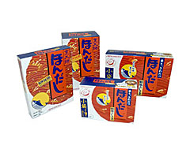

¡Bienvenido a la Tienda de Recipe Realm!

Aquí podrás todos los productos necesarios para cocinar los mejores platos...
Salsa Teriyaki Otafuku 350 grs.

¡Salsa Teriyaki Otafuku! Otafuku nos presenta su Salsa Teriyaki, elaborada con salsa de soja, vino mirin, alga kombu y especias. La Salsa Teriyaki es muy popular entre los japoneses. Indicada para cualquier tipo de carnes y brochetas a la brasa o asadas. Asar la carne primero y verter después la salsa es otra forma no tradicional de preparar un Teriyaki. Producto de Japón.
$1000
Salsa de Soja Orgánica | Nishiki 200 ml.

Prueba nuestra Salsa de Soja Orgánica Tamari Salsa de Soja Nishiki, fundada en 1909, se dedica a producir una salsa de soja auténtica y deliciosa con ingredientes 100% orgánicos de origen japones. Esta salsa de soja, apreciada en todo el mundo, resalta el sabor de platos como sashimi y verduras al vapor, y puede diluirse para disfrutarla como sopa. Hecha con ingredientes naturales. Producto de Japón.
$1150
Salsa de Soja Kikkoman 150 ml.

Házte con nuestra Salsa de Soja Kikkoman 150 ml. Autentica Soja japonesa. Ideal para cocinar verduras, sopas, guisos, hacer salsas o acompañar a las algas. Sin aditivos. Sus ingredientes son 100% naturales sin aditivos ni conservantes. Por otra parte las proteínas de la soja no tienen nada que envidiar a la carne, y además carecen de colesterol. Muy beneficiosa debido a las grandes cantidades de isoflavonas y fitoestrógenos que contiene. Producto de la UE /Marca japonesa.
$980
Fideos Tallarines Frescos | Receta Tradicional 400 grs.

Fideos Tallarines Frescos | Receta Tradicional 400 grs. Deliciosos y suaves tallarines redondos, estilo ramen, elaborados de forma tradicional. Nuestros fideos ramen son el resultado de la fusión perfecta entre la tradición taiwanesa y la frescura de los ingredientes más selectos.
$550
Alga Nori Edición Pokémon 36 grs.

Disfruta del sabor de nuestra Alga Nori Edición Pokémon Deliciosa alga nori de sabor intenso y muy sabrosa, troquelada con la forma de nuestros personajes favoritos para decorar tus platos bento. Nori es un término japonés usado para referirse a variedades comestibles de alga marina de las diversas especies de alga roja Porphyra. Los productos finales se elaboran cortando las algas en tiras y secándolas mediante un proceso parecido al del papel. El nori se emplea generalmente para enrollar el onigiri y el sushi. Producto de Japón.
$600
Sake de Cocina Premium Umami para Cocinar | 400 ml.

Sake de Cocina Premium Umami para Cocinar | 400 ml. Sake de cocina premium, especialmente formulado para enriquecer tus platos con un toque superior. A diferencia del sake tradicional, el Cooking Sake Jouryo incluye aditivos como sal, lo que lo hace ideal para cocinar y no para beber. Esencial en la cocina japonesa para intensificar el umami, neutralizar olores en carnes y pescados, y suavizar sabores en una variedad de recetas, desde sopas hasta salsas. Producto de Japón.
$750
Hodashi 128gr / 150gr / 256gr / 1kg
¡Disfruta de un delicioso y auténtico sabor en tus comidas con el Hondashi/caldo de pescado!. Este caldo de pescado es perfecto para realzar el sabor de tus sopas, guisos y platos de mariscos, brindándote una experiencia culinaria única. Al adquirir este producto, recibirás una unidad de 60 gramos, lo que te permitirá disfrutar de múltiples preparaciones y compartir con tus seres queridos. No esperes más para llevar a tu cocina el toque especial que solo el Hondashi/caldo de pescado puede ofrecerte. Producto de Japón.
$1100
Arroz Japonés Instantáneo Koshihikari | Prefectura de Niigata 200 grs.

Arroz Japonés Instantáneo Koshihikari | Prefectura de Niigata 200 grs. Disfruta de un delicioso arroz japonés instantáneo elaborado con arroz Koshihikari de la prefectura de Niigat, procesado a baja temperatura en tan 2 minutos. Preparación: Abrir la tapa hasta la línea de puntos. Calentar en el microondas durante 2 minutos a 500/600W o 1000W durante 1:30 minuto. Producto de Japón.
$3500
PACK Inspiration Pokemon Jigglypuff | Gift Oulet.

PACK Inspiration Pokemon Jigglypuff | Gift Oulet Disfruta de esta Caja Sorpresa con una gran variedad de increibles refrescos, bebidas y tés a un precio excepcional (Puede incluir snacks)
$2000
Bebida Nico Nico Mogu Mango Toppings Jelly | + 30 Jugo | 320 ml.

Bebida Nico Nico Mogu Mango Toppings Jelly | + 30 Jugo | 320 ml. Una refrescante mezcla de jugosa dulzura y textura deliciosa. Prepárate para saciar tu sed y deleitar tu paladar con la refrescante combinación de un 30% de jugo de mango y Jelly Nata de Coco. Bienvenido al mundo del mango con Jelly Nata de Coco, donde la jugosa dulzura del mango se encuentra con la divertida textura de los trocitos de Jelly de Coco. Producto de Vietnam.
$450
Mochis relleno de Crema de Sésamo Negro 210 grs.

Prueba nuestros Mochis relleno de Crema de Sésamo Negro Exquisitos Mochis Daifuku rellenos de deliciosa Crema de Sésamo Negro y Crema de Leche. Elaborados según la receta tradicional. Sugerencia: Pruébalos también fríos. Mantenlos durante unas horas en el frigorífico y disfrutarás de unos refrescantes y deliciosos Mochis. Producto de Taiwán.
$1500
Curry Japonés Especiado, Java | Medio Picante.

Hoy Come un Plato del Sabroso Curry Japonés Especiado, Java | Medio Picante. Deliciosa mezcla de salsa de curry con cebolla asada y un toque de especias exóticas que le confiere un sabor más intenso. Sabor medio picante. Ideal para guisar con carnes, mariscos y verduras o preparar el Kare Raisu Se presenta en forma de tableta, dividida a su vez en cubos. Producto de Japón.
$800
Curry Japonés con 35 Especias, Golden Curry | 5 Raciones | Medio Picante.

Pon un punto picante con el Curry Japonés con 35 Especias, Golden Curry | 5 Raciones | Medio Picante Curry elaborado con 35 especias diferentes, hortalizas, soja y un toque de manzana. Sabor medio picante. Ideal para acompañar carnes, mariscos y verduras o preparar el Kare Raisu. Esta Salsa Curry, se utiliza para elaborar uno de los platos más populares de Japón, el Kare Raisu (arroz al curry) y sus principales ingredientes son verduras, carne y arroz. Es muy fácil de elaborar gracias a este tipo de salsas.
$990
Fideos Ramen Tantanmen | Edición Pokémon 91 grs.

El auténtico sabor de Japón ahora en tu mesa. Fideos Ramen Soja y Kombu | Receta Shokuhin de Kitakata Ramen "Bibiri Tantan" de Pokemon, con delicioso sabor a Cerdo y sésamo producidos por Sanyo Foods bajo la marca Sapporo Ichiban, especialmente diseñados con una temática de Pikachu. Pensados para los fans de Pikachu y los Ramen.
$1200
Kit de Sushi para 2 Personas.

Kit de Sushi para 2 Personas Set de Sushi para dos personas. Incluye: 2x bandejas tipo pizarra 2x cuencos de melamina 2x soportes para palillos de melamina 2x pares de palillos de bambú Producto de China.
$3300